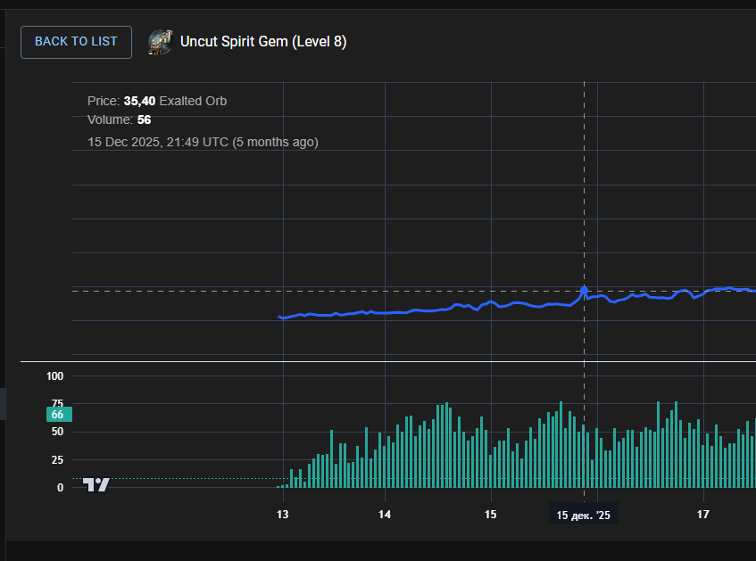
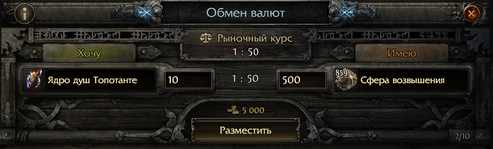
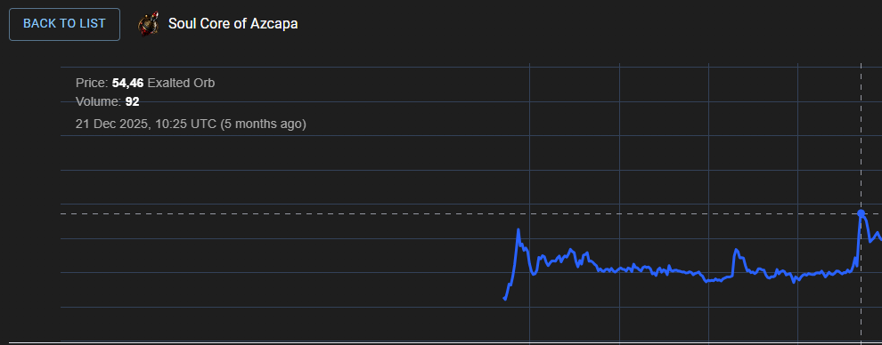
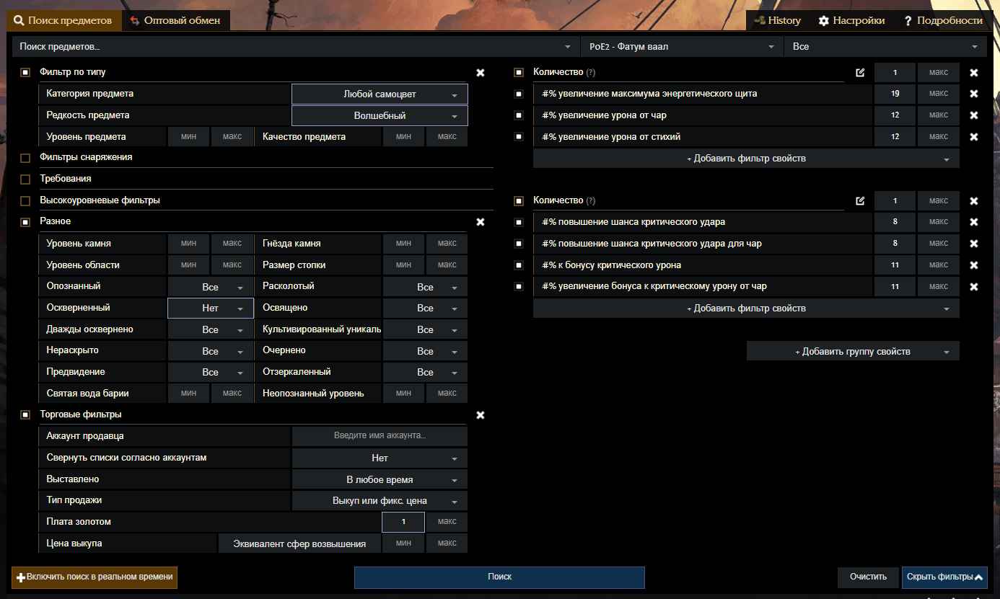

Стартовый капитал
с нуля до первых диванов
Пошаговый план на первые две недели лиги. Что делать буквально по часам — от прохождения актов и продажи камней духа до осквернения гемов и снайпинга трейда. Структурировано из стрим-материалов Unstoppable PoE и дополнено актуальными ценами и изменениями патча 0.5.
Что изменилось в 0.5
Самые важные изменения, которые ломают старые стратегии и открывают новые. Прежний гайд писался под прошлый патч — здесь учтены апдейты Return of the Ancients.
Omen of Recombination вычищен из игры — все существующие омены пропали при логине, система Recombinator отключена. Если в прошлых лигах ты строил план на рекомбе — забудь. Крафт теперь идёт через новые инструменты: Runesmithing, Verisium-руноковку и докрафт стандартными сферами.
Runesmithing & Remnants
В каждой локации появляются Remnants с 2–10 слотами под Runeshapes. Чем больше слотов используешь — тем рарнее предмет на выходе и тем жёстче волны мобов, которых надо завалить.
Убитые мобы дропают Verisium-металл — новая валюта.
Verisium Runeforging (акт 3)
В 3 акте NPC Farrow позволяет апгрейдить уникалки уровня <55 до эндгейм-баз. Лоулвл уникалки впервые в истории ARPG могут уехать с тобой в красные карты.
Runic Ward
Новая защитная прослойка ниже HP (ES — выше HP, теперь Ward — ниже). Срабатывает на 1 HP и поглощает урон. Регенится отдельно от жизни.
Применяется к шмотке ilvl <55 бесплатно, а на 55+ — за часть armour/evasion/ES. Это 30 новых скиллов без требований к атрибутам.
Genesis Tree & Alloys
Новая система крафта, открывающаяся в эндгейме. Alloys и Fluxes — новые валюты для трансформации модов и сопротивлений. Источник топовых уникалок, типа Absent Amulet.
The Fortress (эндгейм)
Полностью переработан эндгейм. Атлас перерисован, добавлены 5 сюжетных линий с реальной целью. Бесплатные пакеты карт и Crusade Mode держат темп между обновлениями.
Trade QoL: Ctrl+Alt+Click
В клиенте появился хоткей Ctrl+Alt+Click по предмету — он сразу открывает поиск на трейде с предзаполненными статами. Огромная экономия времени для снайпинга и докрафта.
Старт 29 мая 2026, 13:00 PDT (23:00 МСК). С 29 мая по 1 июня — бесплатный уикенд на PC/PS/Xbox. С 29 мая по 12 июня — скидка на стартер-пакет. Лучший момент, чтобы пригласить друга в лигу.
Pre-League: подготовка
Чем больше вещей решено заранее — тем меньше ты тратишь время в первые часы лиги, когда каждая минута стоит больше всего.
- Выбран билд league starter (Ice Shot, Twisters, Grenades, Martial Artist, Chaos DoT — все сильные на 0.5)
- На poe2.ninja отмечен билд → выписан leveling-таргет (какие гемы, какой эквип на актах)
- Лутфильтр поставлен и настроен (см. вторую вкладку оригинального гайда)
- Аккаунт на TFT Discord создан, пройдена верификация (для bulk-продаж)
- Закладки в браузере: poe2scout, poe.ninja/poe2, официальный трейд
- Заготовлены 10–15 поисковых ссылок (живой поиск под jewels/армор без рун/посохи) — фильтры из этого гайда
- Сделана разминка пальцев: ALT, Ctrl+Click, Shift+Click, F9 (relog), горячие на колесо
- Стрим/гайды по билду закачаны/закладки сделаны, чтобы во время прохождения не отвлекаться
- Подключился к голосовому чату с тиммейтами / стриму гайдера на 2-м мониторе
- В клиенте стоит ~90% масштаба интерфейса (рекомендация автора оригинального гайда)
В первые 6–8 часов забей на крафт и трейд. Только прохождение акта → выход на T15 карты. Эндгейм начинается с T15, и хорошие базы предметов начинают падать именно там (на T12 уже падают, но реже).
Любой час, потраченный на крафт вместо прокачки, в первые 24 часа стоит в разы больше, чем тот же час на 5-й день.
Кампания: Акты 1–4
Просто гони сюжет
Никаких глубоких остановок. Подбирай только то, что лежит «в трёх клетках» от тебя или подсвечено лутфильтром как высокий приоритет. Цель — перевалить акт 4 и открыть НПС Анге, которая принимает камни духа.
На что обращать внимание прямо во время актов:
- Камень духа 8-го уровня (Uncut Spirit Gem lvl 8) — топ-приоритет дропа. В прошлой лиге держался 10 400+ ex на конце (~55 div). На старте лиги их продают сильно дешевле, но 15–30 экзов за каждый — реальная цена в первый день.
- Падают на уровнях локаций 27–29: Захоронённые святилища / Дешар / Пути скорби. Можно пару раз ресетнуть локацию, если знаешь свой билд.
- С локации 28+ (Дешар → Шпили) начинают падать базы оружия 28+ уровня с более высоким уроном — резетнуть и проверить, нет ли апгрейда под себя или под продажу.

НОВОЕ в 0.5: руноковка уникалок
В 3 акте появляется NPC Farrow — он даёт Verisium Runeforging: можно прокачивать уникалки уровня <55 до эндгейм-баз.
Не выкидывай низкоуровневые уникалки. Сохраняй любые с интересными мехами: Ironbound, Facebreaker, Хор бури (Storm Choir) и т.д. Они либо нужны самому в эндгейм, либо вырастут в цене после прокачки.
Первая монетизация: продажа камней духа
Как только открыл Анге (4 акт) — продай все камни духа 8-го уровня. Это твоя первая ликвидность. Реалистично: 2–3 камня × 15–30 ex = 30–90 ex стартового бюджета.
На эти деньги ты можешь сразу:
- Купить начальный эквип под билд (1–2 крафтовые сферы возвышения)
- Инвестировать в уникалки под осквернение (см. День 4–7)
- Начать флип через Анге (валюта/крафт-материалы)
Выход на карты + первые подработки
После актов цель — добежать до T1 карт и постепенно повышать. Параллельно с прокачкой запускаются две низкоэнергетические схемы заработка, которые не требуют ни знаний крафта, ни кучи валюты.
Схема A · Перепродажа поясов Тяжелый ремень
Покупаешь обычные (белые) «Тяжелый ремень» на трейде за 4–15 ex, продаёшь за +30–35% наценки тем, кто ленится бегать сам. К концу 2-й недели лиги они доходят до 40–50 ex (≈0.4 div) за штуку.
Скамеры пихают рядом с белыми поясами магические/редкие пояса и подменяют цену с «10 экзов» на «10 бож.сфер» (это в ~200 раз дороже). Защита:
- В поиске добавляй regex
Обычн|Возвыш(RU) илиNorm|Exalted(EN) — подсветит только нормальные базы с ценой в ex - Перед покупкой всегда сверяй валюту в окне обмена. Игра подсветит подозрительную сделку — это твоё спасение
- Ставь цену на 1–2 ex выше минимальной — не воюй с ботами за 1 экз

Где сливать пояса
- TFT Discord: канал
bulk bases - wts. Зайди в How to Verify, пройди мини-верификацию — откроются bulk-каналы. Постишь свои базы пастой (пример на скрине) - Внутриигровой чат торговли — будут троллить из-за наценки, но покупатели найдутся
- Телеграм-канал сообщества: t.me/Pathofexile2communitysng
Схема B · Снайпинг через ALT
В трейде нажимай ALT, наведя на интересующий предмет — увидишь, кто и за сколько его выкупает. Это позволяет ставить обратные ордера на нужные тебе ядра душ, эссенции или крафт-валюту.
Пример: Разбойничий катализатор на старте лиги стоит 5–15 ex. Ты нажимаешь ALT, видишь по каким ценам идёт выкуп — и ставишь кратную нулю цифру: 30, 40, 100. Ждёшь, пока выкупят по более выгодной цене.
Для понимания закономерностей пользуйся poe2scout — он показывает время суток, динамику популярности крафта и т.д.
Раскрутка через перековку
После актов один из самых банальных способов — перековка ядер душ: 3 дешёвых одинаковых ядра → шанс получить одно из топ-исходов. На этом этапе твоя задача — за день-два сделать первые 10–15 диванов для крафта.
Перековка ядер душ
Берёшь 3 одинаковых дешёвых ядра (например, Ядро Топотанте по 40 ex × 3 = 120 ex), кидаешь в Перековку. В пуле «дорогих» исходов:
Скорость атаки
Универсальный стат для большинства билдов
Дух
Бафнутый ресурс под минионов и ауры
Крит урон
Ядро Тикабы — пример в гайде, ~17 div на пике
% Мана / % HP / Заряды
Стабильно дорогие модификаторы под зерки и танков

Перековка хороша для раскрутки начального бюджета. Заниматься этим на постоянной основе — менее эффективно, чем крафт вещей. Это инструмент быстро сделать первые 10–15 диванов, дальше переходи к крафту или живому поиску.
Перековка эссенций
Та же логика: 3 одинаковые совершенные эссенции → шанс получить дорогую. Минус по сравнению с ядрами — меньше «дорогих» исходов. Если на старте лиги все эссенции дешёвые и количество дорогих маленькое — выгода минимальна.
В отличие от ядер душ, у которых 5–6 дорогих исходов (Дух, Скорость атаки, крит урон, % мана, % здоровье), у эссенций пул победителей сильно уже.

Перековка катализаторов (опционально)
Если у тебя уже валяются дешёвые катализаторы (фармил с Дерева разлома или Ксешта) — можно прокликать их и получить дорогие. Главный минус — стоимость в золоте. Не покупай катализаторы с трейда специально под перековку.
В пуле как минимум 5–6 «дорогих» исходов — для перековки этого достаточно.
Хайп: продажа запасов + Lineage
На 5–7 день лиги начинается волна игроков на T15 карт. Спрос на эндгейм-аффиксы резко вырастает — это пик цен на ядра душ с топ-статами и Lineage камни поддержки. Твоя задача — продать всё, что закупил в первые дни.
Стратегия по ядрам душ
В первые дни ты можешь смело покупать топ-ядра по 5–10 ex и ставить на выкуп цену 30–40 ex. Когда волна спроса дойдёт — все твои выкупятся за одну ночь.
Скачки цен обусловлены: временем суток, количеством на рынке, резким спросом очередной волны игроков, выходящих на T15 + хайпом конкретных билдов. Если билд А станет метой — ядро под него подорожает в 5–10 раз за сутки.
Lineage / Наследные камни поддержки
Lineage gems — отдельный класс популярных и дорогих камней поддержки, которые улетают в небеса в зависимости от меты.
Пример из прошлой лиги: Свирепость Ригвальда (Rigwald's Ferocity)
Камень нужен под популярные Twister-билды (требует Whirlwind Slash с большой скоростью атаки на одном комплекте оружия). В реалиях патча 0.5 этот камень мог уехать с 1–2 div на старте до 10–20+ div к середине лиги.
К концу прошлой лиги (Fate of the Vaal) Ригвальд держался в районе 75 000 ex по poe2scout — это ~400 div.
1. Смотри топ-билды на poe2.ninja/builds — какие именно фигурируют в первые 24 часа.
2. Открой графики камней на poe2scout — какие сильно дешевле своих исторических пиков.
3. Учитывай мету: в прошлой лиге все ломанулись на Ice Shot и Poison PF, поэтому Ригвальд (под Twister) рос медленнее остальных топов.
4. Подобные камни — крутая защита от инфляции: даже если ты не угадаешь хайп, к концу лиги они стоят дороже старта.
Перековка уникалок 19→20
Один из чистых методов перековки — уникалки со встроенными умениями. Классика — амулет Хор бури (Storm Choir).
Схема:
- Покупаешь / выбиваешь с Ксешта 3 амулета 19-го уровня (стартовая цена ~5 ex каждый = 15 ex за три)
- Кидаешь в Перековку
- С небольшим шансом получаешь амулет 20-го уровня
В рефах гайда: база 19-го уровня = 5 div к середине лиги, амулет 20-го уровня = 500 div. Это значит 1 удачная перековка окупает 60–150 неудачных. На старте разрыв меньше, но всё ещё профитный.
Всегда перед перековкой проверь цены 19-го и 20-го уровня. Если разница в 60–70 раз — смысл есть. Если в 10–20 раз — этого мало, отказывайся от схемы и переключайся на что-то другое.
Стабильный профит: осквернение и крафт
К началу второй недели у тебя должно быть 50+ диванов рабочего капитала. С ними открываются основные «дойные» стратегии лиги.
Осквернение камней умений
Что нужно
- Призма камнереза (Gemcutter's Prism) ×4 — поднять качество до 20% (~2 ex/шт = 8 ex)
- Совершенная сфера златокузнеца (Perfect Jeweller's Orb) ×1 — ~57 ex на старте
- Сфера Ваал ×1 — копейки, 0.5–1 ex
Раньше «Omens of Corruption» убирали нейтральный исход (когда с гемом ничего не происходит). В патче 0.5 их вычистили — теперь у нас всегда есть нейтральный исход, что слегка меняет матожидание, но не сильно.
6 исходов осквернения (по ~16.7% каждый)
+1 уровень умения
~6–12 div за гем 5/5 слотов с качеством на старте лиги
+качество до 23%
Можно докинуть «Кристаллизованную порчу» — шанс на +1 уровень. Риск: гем может полностью разрушиться
Ничего не происходит
Выставляешь обратно — отбиваешь часть инвестиций
−1 слот поддержки
Очень плохо
−1 уровень умения
Очень плохо
−качество
Просто слив
Расчёт на 100 камней
| Исход | Кол-во | Деньги |
|---|---|---|
| Идеал (+1) | 17 шт | +3 400 ex |
| Окуп / нейтрал / +кач | ~33 шт | +2 640 ex |
| Фейлы (3 плохих исхода) | ~50 шт | −3 500 ex |
| Чистая прибыль | +2 540 ex ≈ 31.75 div | |
| Инвестиции | 100 циклов | 7 000 ex ≈ 87.5 div |
| ROI | ~37% |
Условия: 80 ex за 1 div, продажа идеальных исходов по 6 div «грязными». В отдельные этапы лиги чистая прибыль скачет от 20 до 60%.
Не покупай 20-й гем сразу. Берёшь любой подходящий (даже 15-й — они часто падают на T15 картах и стоят дёшево), осквернаешь, и только при удаче докачиваешь до 20-го уровня. Так экономишь ~150 ex (стоимость доп. сфер) на каждом неудачном осквернении.
Смотри на трейде, какие гемы 21-го уровня сейчас самые дорогие. Это всегда метовые билды (poe2.ninja → Build → отсортируй по % популярности). Выбирай самый дорогой из топ-метовых — это поднимает маржу с каждого удачного исхода.
Живой поиск (Live Search) — снайпинг трейда
Это уже более продвинутая стратегия — нужны скорость, понимание ценности статов, базовое знание крафта. Но даже на старте лиги один удачный снайп может покрыть день фарма.
Пример 1: Волшебные самоцветы (Voltaic Jewels)
В фильтре поиска ставишь сверху Количество = 1 и в суффиксах перечисляешь нужные статы (например, разные модификаторы крита). Алгоритм будет искать один из указанных. Жмёшь Включить поиск в реальном времени → ждёшь звукового оповещения.
Готовая ссылка-фильтр (поменяй лигу Fate of the Vaal на Aldur в URL):
Нашёл дешёвый самоцвет за 5–10 ex? Вот что делать:
- Кидаешь сферу царей (Vaal Orb)
- Если третий стат выпал бесполезным — сфера отмены, либо просто откинуть chaos orb (если отмена дорогая), либо exalt и продать
- Цель: 4/4 полезных стата — тогда самоцвет уходит дорого
То же самое работает с самоцветами Сехемы.
Пример 2: Шмотки без качества и рун (докрафт)
Ищешь редкие предметы, у которых уже есть 4 хороших стата, но нет качества и не вставлены руны. Кидаешь:
- Двойную сферу возвышения в суффикс → 2 резиста + отклон / ускорение энергощита / 3 резиста
- Качество до 20%
- Делаешь дырки → вставляешь руны железа
- Продаёшь
Перед качеством и рунами — посмотри, сколько потенциально будет стоить готовый предмет, чтобы не зря тратить валюту.
Готовые фильтры из гайда (поменяй Fate of the Vaal на Aldur)
Крафт белых баз с пола → продажа синих
В 0.5 GGG порезали шансы выпадения 3-х синих сфер и уровни модификаторов 2-х сфер — но докрафчивать с пола всё ещё прибыльно.
Цикл: Сфера превращения → проверка стата → если т1-т2 → сфера усиления → доводка или продажа.
Хорошие синие комбинации
Жезлы / Посохи
+ к умениям (метовые стихии). В новом сезоне популярны билды на растениях → посохи с +физ чар будут в спросе.
Фильтр→Оружие
% физ урон (хотя бы т2) + крит шанс / скорость атаки / + к умениям. Иногда хватает одного % физ урона.
11 стратегий: сравнительная таблица
Все способы из гайда, ранжированные по сложности, времени применения и ожидаемой доходности. Используй как чек-лист.
| # | Стратегия | Когда | Вход | ROI | Сложность | Риск |
|---|---|---|---|---|---|---|
| 1 | Продажа Spirit Gem lvl 8 с актов | Час 6+ | 0 | чистый | Низкая | Нет |
| 2 | Перепродажа поясов «Тяжелый ремень» | День 1–14 | 1–2 div | 30–50%/цикл | Низкая | Скам-риск |
| 3 | ALT-снайпинг ставок на катализаторы/омены | День 1+ | от 50 ex | 20–80% | Средняя | Низкий |
| 4 | Перековка ядер душ | День 2–3 | ~120 ex/цикл | средний+ | Средняя | Средний |
| 5 | Перековка эссенций | День 2–3 | низкий | низкий-средний | Средняя | Средний |
| 6 | Перековка катализаторов (фарм-only) | День 3+ | 0 (фарм) | высокий* | Средняя | Низкий |
| 7 | Закупка ядер душ в задел | День 1–3 → продажа день 5–7 | от 50 ex | 200–400% | Средняя | Средний |
| 8 | Перековка уникалок 19→20 (Хор бури и т.п.) | День 4+ | ~15 ex/попытка | высокий | Средняя+ | Высокий |
| 9 | Lineage gems на ранний выкуп | День 2–5 → выход неделя 2+ | 1–2 div | 500–1000% | Средняя+ | Средний |
| 10 | Осквернение камней умений | Неделя 2+ | 87 div/100 циклов | ~37% | Высокая | Средний |
| 11 | Live-search snipe jewels + докрафт | Неделя 1+ | 10–50 ex/предмет | 200–500% за удачу | Высокая | Средний |
| 12 | Крафт белых баз с пола → синие | Неделя 1+ | фарм + 2–5 ex | средний | Средняя | Низкий |
* зависит от того, насколько дешёво ты получил исходники.
Справочник цен (Fate of the Vaal, конец прошлой лиги)
Снято с poe2scout API. Это конец прошлой лиги — на старте Aldur цены будут в разы ниже. Используй как ориентир: что обычно сколько стоит на пике и какие категории дают самые большие умножения.
Топ Lineage Support Gems
| Камень | Цена (ex) | ≈ div |
|---|---|---|
| Garukhan's Resolve | 140 063 | 749 |
| Uul-Netol's Embrace | 103 504 | 554 |
| Uhtred's Augury | 101 640 | 544 |
| Rigwald's Ferocity (пример из гайда) | 75 086 | 401 |
| Uhtred's Omen | 61 213 | 327 |
| Rakiata's Flow | 50 313 | 269 |
| Tul's Stillness | 38 417 | 205 |
| Esh's Radiance | 26 942 | 144 |
Топ Soul Cores (Ядра душ)
| Ядро | Цена (ex) | ≈ div |
|---|---|---|
| Xopec's Soul Core of Power | 2 069 | 11.1 |
| Opiloti's Soul Core of Assault | 1 474 | 7.9 |
| Soul Core of Quipolatl | 1 381 | 7.4 |
| Soul Core of Jiquani | 769 | 4.1 |
| Guatelitzi's Soul Core of Endurance | 734 | 3.9 |
| Soul Core of Ticaba (крит урон — пример из гайда) | 550 | 2.9 |
| Soul Core of Azcapa | 504 | 2.7 |
| ↓ дешёвые ядра для перековки ↓ | ||
| Soul Core of Atmohua / Cholotl / Tacati's | ~155 | 0.8 |
| Topotante's Soul Core of Dampening (пример входа в перековку) | 55 | 0.3 |
| Hayoxi's / Citaqualotl's / Zalatl's / Tacati | 21–35 | ~0.1 |
Uncut Skill / Spirit Gems (камни)
| Камень | Цена (ex) | ≈ div |
|---|---|---|
| Uncut Spirit Gem (lvl 8) (топ-фарм с актов) | 10 407 | 55.6 |
| Uncut Spirit Gem (lvl 20) | 5 949 | 31.8 |
| Uncut Spirit Gem (lvl 9) | 4 276 | 22.9 |
| Uncut Spirit Gem (lvl 7) | 3 649 | 19.5 |
| Uncut Skill Gem (lvl 20) | 754 | 4.0 |
| Uncut Support Gem (lvl 5) | 180 | ~1 |
Топ Essences (для перековки)
| Эссенция | Цена (ex) |
|---|---|
| Lesser Essence of Seeking | 37 085 |
| Essence of Alacrity | 2 828 |
| Essence of Thawing | 2 429 |
| Lesser Essence of Sorcery | 2 160 |
| Lesser Essence of Ice | 1 486 |
| Essence of Horror | 1 110 |
| Essence of Battle | 287 |
На старте лиги все эти цены будут в 5–20 раз ниже и постепенно подтянутся к таким значениям к 3–4 неделе. Используй таблицу для:
- Понимания, какие категории в принципе стоят сотни диванов (топ Lineage, Spirit Gem lvl 8)
- Поиска «дешёвых исходов» для перековки (нижние строки в Soul Cores)
- Прикидки своего таргета на 2-ю неделю — что покупать в задел и до какой цены ждать
Полезные ресурсы и инструменты
poe2scout.com
Реальные цены, графики, история курсов. Открытый API. Главный инструмент для проверки маржи перед любой манипуляцией.
Открыть→poe.ninja/poe2
Экономика через Currency Exchange. 14 категорий, нормализация к Chaos / Divine / Exalted. История 120 дней.
Открыть→poe2.ninja/builds
Популярные билды лиги. Смотри % популярности — это даёт понимание, какие гемы будут метой.
Открыть→TFT Discord
Bulk-продажи баз и валют. Пройди верификацию заранее, чтобы в первый день уже постить пасты.
Присоединиться→Телеграм-сообщество PoE 2 SNG
Канал автора оригинального гайда. Можно продавать не только пояса, но и другие предметы.
Подписаться→Twitch UnstoppablePoE
Стрим автора оригинального гайда. Полезно держать в фоне в первые дни для свежих наблюдений.
Смотреть→Wiki / патчноут 0.5
- poe2wiki.net — Version 0.5.0 — полный список изменений патча Return of the Ancients
- Официальный форум PoE 2 — патчноуты от GGG
Галерея из оригинального гайда
Все скриншоты с примерами трейд-фильтров, перековок, осквернения и торговых интерфейсов. Кликни любую — откроется в полном размере.